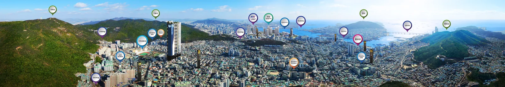
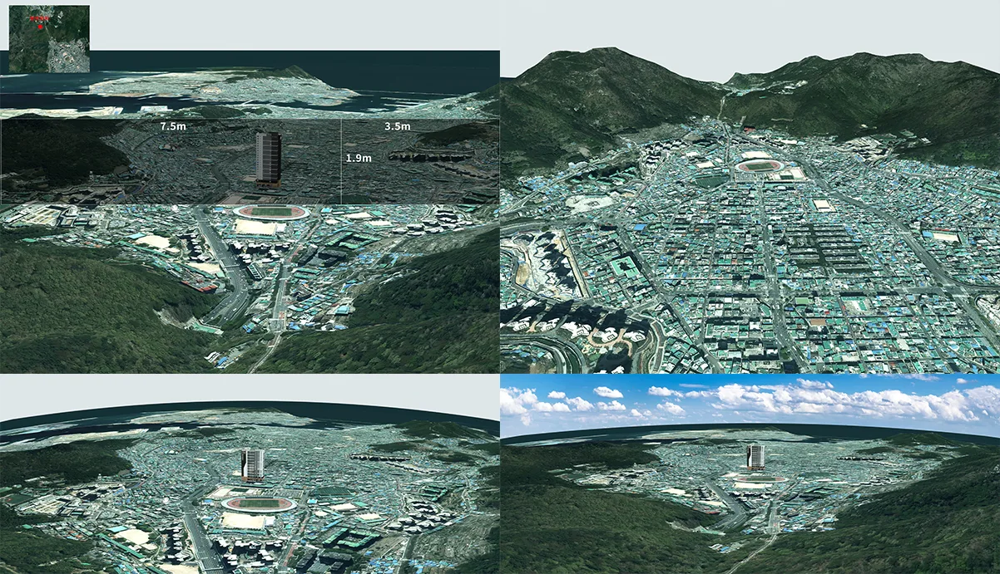
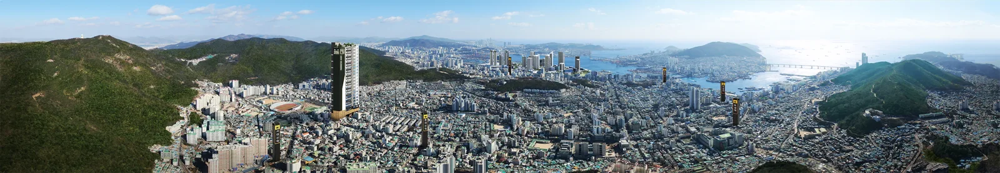

파노라마 광역도 이미지입니다. 실제 결과물보다 축소된 사이즈니 참고 부탁드립니다.

일반적인 광역도 비율과 와이드 실사출력을 동시에 대응할 수 있도록 작업을 진행하였습니다.
초기 뷰 선정단계에서 기존에 생각하시던 방향보다는 측면에서 촬영하여 제작하는것이 더 아름답겠다고 결정되어 방향이 많이 변경되었던 프로젝트였습니다

광역도 전체적인 배치가 끝나고 후에 시각적인 이정표 작업 전 전반적인 표현 내용들을 확인하실 수 있도록 보내드린 중간 과정 결과물입니다.
광역도 제작과 동시에 VR 이미지도 제작하여 납품하게 되었습니다.
https://www.360cities.net/image/pano-002-2
상기 링크에서 제작된 파노라마 이미지를 확인하실 수 있습니다.
감사합니다.